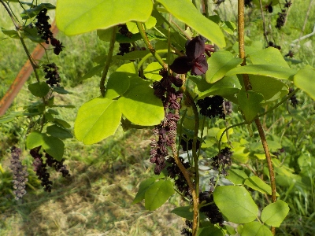
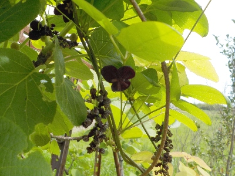
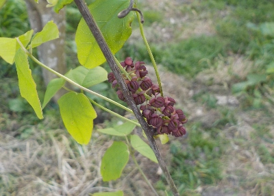

遊びで植物を育てよう
アケビの開花情報
更新日 : 2025/04/27
2025/04/27
アケビの花が沢山咲いていますが、実は期待していません。

去年も花が沢山咲きましたが実が出来なかったので、今年も実が出来ない可能性があるなと思っています。
去年は期待しすぎてガッカリだったので、今年は期待しないようにしています。
2024/04/27
アケビの雌花と雄花の区別がつくようになりました。

最初は小さいツブツブだけでしたが、上の方に少し大きな花が咲きました。これが雌花ですね。
この花は色が濃いのでミツバアケビみたいです。
2024/04/13
アケビの花って小さいですね。

これは本当にアケビの花なのかな？
小さいツブツブがあるだけです。こんなんが大きな実になる感じがしません。
あと、またツルが細いので実が出来たら重さでツルが切れそうです。
アケビの記事をまとめたものはこちら
TOP > 果物 > アケビ
【おいしいものを食べよう。】【しっかり寝よう。】
【ソロ活をしよう!】【季節感のあることをしよう。】【動画視聴はほどほどに。】【当サイトの全てのコンテンツは無断転載禁止です。】